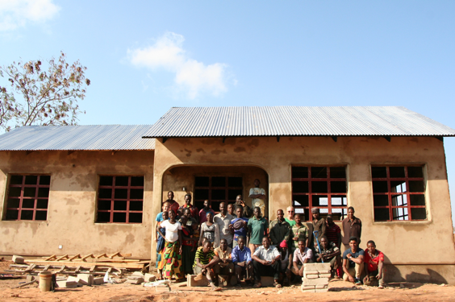

Mkutani Schoolhouse Project
The goal of this project is to support the education of the students at Mkutani Primary school. We aim to meet their basic everyday school needs. We aim to use our engineering experiences to improve and support the education experiences of the children in Mkutani.
A Brief History
 In August 2014, the Boston Professional Chapter of Engineers Without Borders USA began working in the community of Mkutani, Tanzania on a potable water supply project. While the project team was performing assessment for a water supply project, the community expressed an urgent need for better infrastructure at the school. Mkutani's Primary School serves approximately 600 students from kindergarten through eighth grade. Following this request, our chapter visited Mkutani in the summer of 2016 to establish relationships and to understand the community priorities. It was established that building an additional classroom, a teacher's residence and adding latrines to the school would be a good start in facilitating the development of the school and improving the education of the young children of Mkutani community.
In August 2014, the Boston Professional Chapter of Engineers Without Borders USA began working in the community of Mkutani, Tanzania on a potable water supply project. While the project team was performing assessment for a water supply project, the community expressed an urgent need for better infrastructure at the school. Mkutani's Primary School serves approximately 600 students from kindergarten through eighth grade. Following this request, our chapter visited Mkutani in the summer of 2016 to establish relationships and to understand the community priorities. It was established that building an additional classroom, a teacher's residence and adding latrines to the school would be a good start in facilitating the development of the school and improving the education of the young children of Mkutani community.
What's Happened so far?
The community members began to collect funds and were able to construct extra classrooms in the fall of 2016 and so the project team began to focus on building a teacher's residence. The need for teacher housing was a priority in Mkutani because some of the teachers who teach at the school have to live outside of Mkutani, and transportation to and from the school is not reliable. As a result, the teachers are often late to school leading to diminished instruction time and quality for the students. Unfortunately, this circumstance occurs regularly and leads to poor performance of the students on the national examination, which is the sole factor in determining admission to secondary school. During the summer of 2017, a three bedroom house with a kitchen, bathing area, and latrine was constructed in Mkutani. It was a great opportunity for the members of the Harvard Chapter to work with the community in the construction of the house. The community had already set the pace by digging trenches for the foundation during the week prior to the project team arriving. The house was completed successfully by the community and it accommodates teachers today.
Figure 1: Mkutani community members and members of the project team pose for a farewell photo at the end of the August 2017 trip. Painting, glass windows, and installation of electricity, organized by the community leadership, was completed during September 2017
What's Next?
While in the community last summer, the project team had the opportunity through many conversations and meetings to determine the community members' priorities for the next implementation phase. Based on the information gathered through community meetings and surveys, a substantial need for water was raised as a major concern. The nearest source of clean water is 3km away from the school and it will take years before a water distribution system that would serve the school will be constructed. It was apparent that the project team could start addressing some of the water needs by installing rain-water harvesting systems at the school facilities. These water catchment systems will provide some capacity to serve the need for water for the teachers and students at the school. This water will be used for household applications for the teachers and can be treated to be drinkable by the students as well.
From left top down: Figure 2: A meeting with the school committee to determine next steps for the school project Figure 3: Jerry Bowling, a professional mentor, and Eshaan Patheria, of Harvard EWB, converse about the roof layout at the site. Figure 4: (Left to right) Nicole Trenchard, Eshaan Patheria, and Robert Anderson in Dubai during a layover on the way to Tanzania Figure 5: Daniel Getega and Nicole Trenchard with community members discussing with the contractor and carpenter on some issues regarding the alignment of the truss for the roof of the house. Figure 6: (Left to right) Diedre Ericson, Christopher Lombardo, Robert Anderson, Benjamin Holsapple and Kevin Hebard during the construction of the house in August 2017